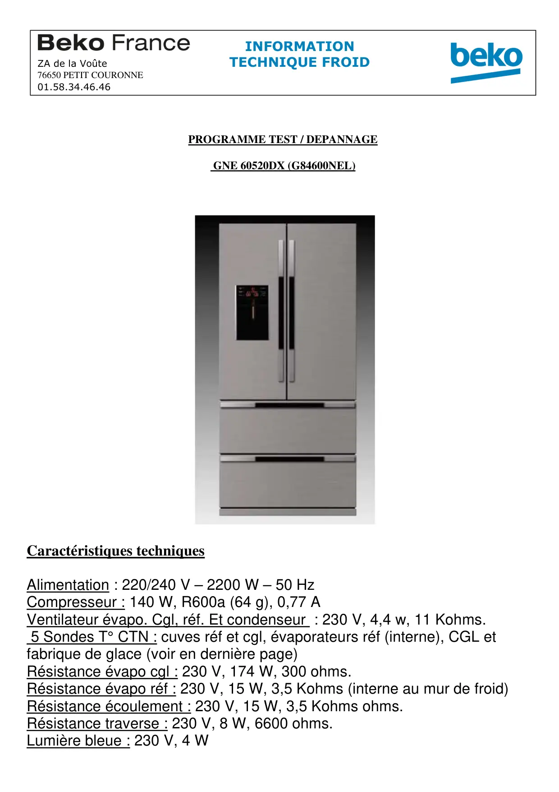
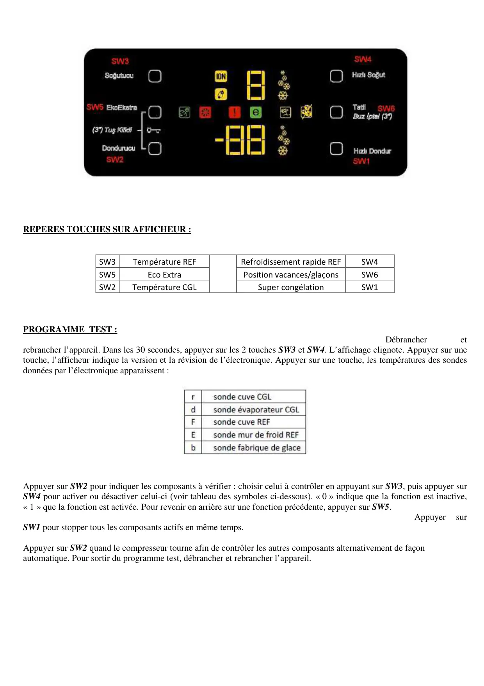
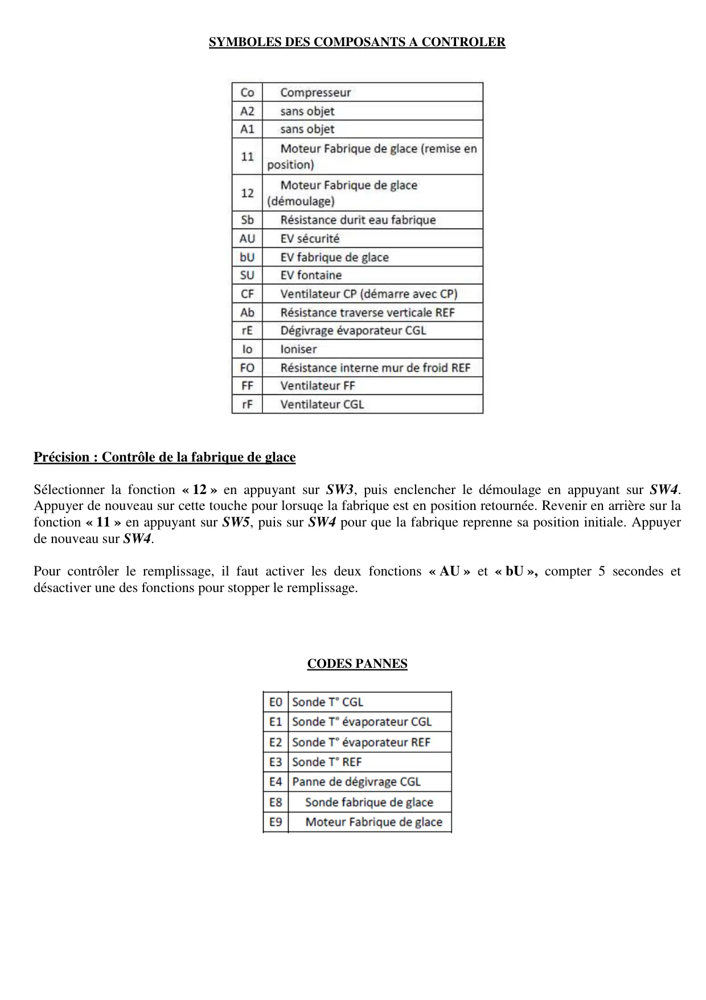
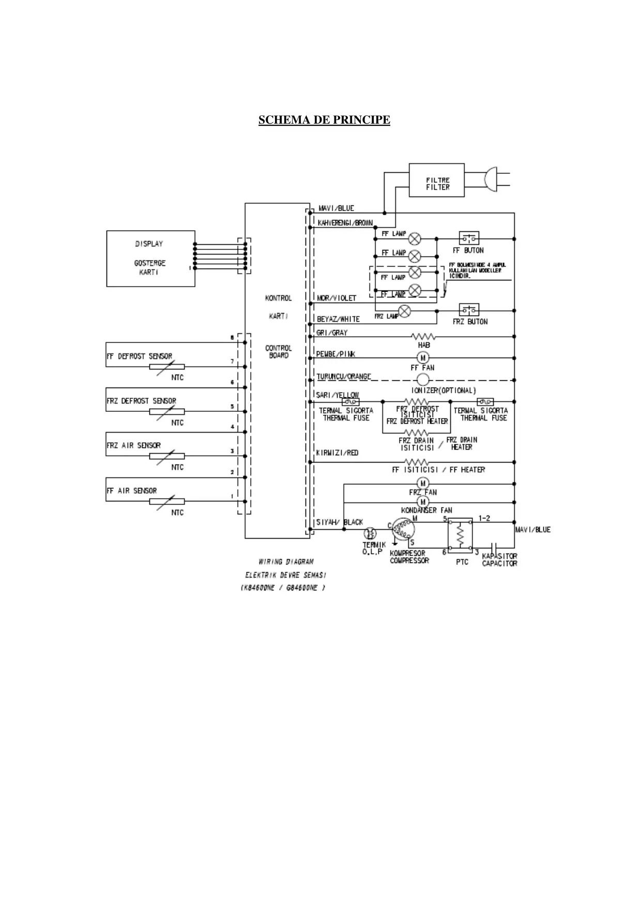
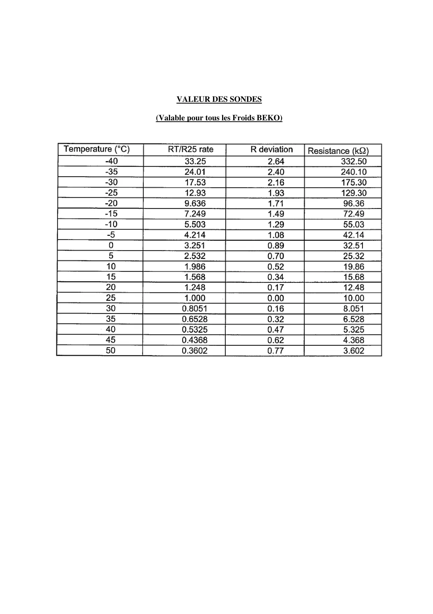

ProgrTest G84600NEL GNE60520DX

PROGRAMME TEST / DEPANNAGEGNE 60520DX (G84600NEL)Caractéristiques techniquesAlimentation : 220/240 V – 2200 W – 50 HzCompresseur : 140 W, R600a (64 g), 0,77 AVentilateur évapo. Cgl, réf. Et condenseur : 230 V, 4,4 w, 11 Kohms.5 Sondes T° CTN : cuves réf et cgl, évaporateurs réf (interne), CGL etfabrique de glace (voir en dernière page)Résistance évapo cgl : 230 V, 174 W, 300 ohms.Résistance évapo réf : 230 V, 15 W, 3,5 Kohms (interne au mur de froid)Résistance écoulement : 230 V, 15 W, 3,5 Kohms ohms.Résistance traverse : 230 V, 8 W, 6600 ohms.Lumière bleue : 230 V, 4 WINFORMATIONZA de la Voûte TECHNIQUE FROID76650 PETIT COURONNE01.58.34.46.46
1 / 5
REPERES TOUCHES SUR AFFICHEUR :SW3Température REFRefroidissement rapide REFSW4SW5Eco ExtraPosition vacances/glaçonsSW6SW2Température CGLSuper congélationSW1PROGRAMME TEST :Débrancheretrebrancher l’appareil. Dans les 30 secondes, appuyer sur les 2 touches SW3 et SW4. L’affichage clignote. Appuyer sur unetouche, l’afficheur indique la version et la révision de l’électronique. Appuyer sur une touche, les températures des sondesdonnées par l’électronique apparaissent :Appuyer sur SW2 pour indiquer les composants à vérifier : choisir celui à contrôler en appuyant sur SW3, puis appuyer surSW4 pour activer ou désactiver celui-ci (voir tableau des symboles ci-dessous). « 0 » indique que la fonction est inactive,« 1 » que la fonction est activée. Pour revenir en arrière sur une fonction précédente, appuyer sur SW5.AppuyersurSW1 pour stopper tous les composants actifs en même temps.Appuyer sur SW2 quand le compresseur tourne afin de contrôler les autres composants alternativement de façonautomatique. Pour sortir du programme test, débrancher et rebrancher l’appareil.
2 / 5
SYMBOLES DES COMPOSANTS A CONTROLERPrécision : Contrôle de la fabrique de glaceSélectionner la fonction « 12 » en appuyant sur SW3, puis enclencher le démoulage en appuyant sur SW4.Appuyer de nouveau sur cette touche pour lorsuqe la fabrique est en position retournée. Revenir en arrière sur lafonction « 11 » en appuyant sur SW5, puis sur SW4 pour que la fabrique reprenne sa position initiale. Appuyerde nouveau sur SW4.Pour contrôler le remplissage, il faut activer les deux fonctions « AU » et « bU », compter 5 secondes etdésactiver une des fonctions pour stopper le remplissage.CODES PANNES
3 / 5
SCHEMA DE PRINCIPE
4 / 5
VALEUR DES SONDES(Valable pour tous les Froids BEKO)
5 / 5